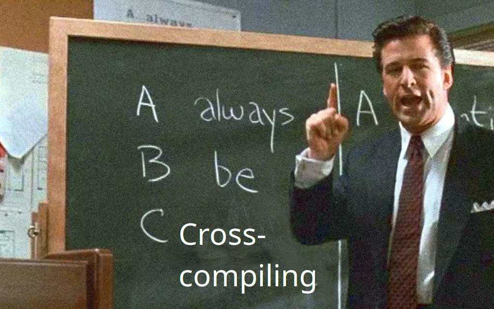

Always be Cross-compiling
Matthew Bauer, John Ericson
Created: 2019-10-09 Wed 14:01
1 Overview
1.1 Always be cross compiling

1.2 Who needs cross-compilation?
- Used to create executables for a system different than we are currently on
- While native compilation is usually easier and better supported, we
need cross-compilation for:
- embedded systems, no Nix
- windows, no Nix (yet)
- new operating systems
- architectures where we haven’t made bootstrap tools
1.3 History
- Nixpkgs has had cross-compilation support for a while.
- But, it was considered separate from native compilation, requiring
special
crossAttrsargs. - Recent efforts make cross-compilation less exceptional, allowing us to reuse native infrastructure. This reduces duplication between package expressions.
2 Specifying systems
2.1 What is a system string?
- Two ways to specify target systems exist. Both are supported in
Nixpkgs through
crossSystemandlocalSystemmechanisms. - A system string is meant to specify some group of computers by architecture, operating system, or ABI.
2.2 Nix system tuple (system)
- Format:
<arch>-<os> - Examples:
x86_64-linuxx86_64-darwinaarch64-linuxi686-windowsarm-none
- Nix internally doesn’t care about libc or vendor.
2.3 LLVM triple, also know as GNU config (config)
- Format:
<arch>-<vendor>-<os>-<libc> - Examples:
x86_64-unknown-linux-gnux86_64-apple-darwinaarch64-unknown-linux-musli686-pc-mingw32arm-none-eabi
- Actually has up to 4 parts, making it a quadruple not a triple.
libcis optional on systems where there is only one standard Libc.
2.4 History
- Original GNU config just had 3 parts.
linux-gnuwas used by GNU people to emphasize GNU/Linux. Thegnupart was retconned later on to mean GNU Libc. We now have two other Libcs that work on Linux: Bionic (linux-android) and Musl (linux-musl).
3 Toolchains
3.1 Building a toolchain
- Nixpkgs needs to support many different use cases of cross-compilation.
- By far the most complex is bootstrapping a toolchain. In this case, we have 3 systems we need to identify.
3.2 Autoconf arguments
- We borrow naming from Autoconf for this:
--build(stdenv.buildPlatform)- The system on which the package is being configured and compiled.
--host(stdenv.hostPlatform)- The system on which the package will run.
--target(stdenv.targetPlatform)- The system on which any compiler will produce code for.
3.3 How they work
- Most users only need to care about the first 2, but
--targetis still needed to prevent adding a special case for building toolchain compilation. - Toolchain package like compilers and linkers usually need to pay attention to all three. GCC and GNU Binutils need to know where they are going to run as well as what they should produce output for.
- Other toolchains like LLVM are target-independent and don’t need to
know where they will run. They just need to know about
--buildand--target.
3.4 Compilation terminology
--build == --host == --target- Native compilation
--build /= --host == --target- Cross compilation
--build /= --host /= --target- Canadian cross compilation
--build == --host /= --target- ?
3.5 Cross toolchains
- Cross toolchains are provided in Nixpkgs as separate package sets.
- These package sets will produce packages that will run on a machine different than your own.
3.6 Cross toolchains examples
- Some examples are necessary.
- A C compiler for your native machine:
(import <nixpkgs> {
crossSystem = "aarch64-unknown-linux-musl";
}).buildPackages.buildPackages.gcc
- A C compiler for 64-bit ARM:
(import <nixpkgs> {
crossSystem = "aarch64-unknown-linux-musl";
}).buildPackages.gcc
- A C compiler that runs on 64-bit ARM:
(import <nixpkgs> {
crossSystem = "aarch64-unknown-linux-musl";
}).gcc
4 Specifying dependencies
4.1 Overview
- Specifying dependencies is an important part of Nix. Thinking about dependencies adds a second dimension to the system matrix above.
- Each dependency will be built on one system for another system.
- From each we get a tuple that can be used correctly.
4.2 List of dependency types
- (
--build,--build) - depsBuildBuild - (
--build,--host) - nativeBuildInputs - (
--build,--target) - depsBuildTarget - (
--host,--host) - depsHostHost - (
--host,--target) - buildInputs - (
--target,--target) - depsTargetTarget
4.3 Diagram

5 Case study 1: Static compilation
5.1 Problem
- By default, Nixpkgs disables static libraries when configuring. We prefer shared libraries to reduce closure sizes and force linking between packages.
- You’ve been able to override this behavior for a while by setting
dontDisableStatic. This could be added to an overlay so that everything in the package set builds statically. - But, doing this is not easy because it requires a mass rebuild of everything, buildtime and runtime.
5.2 Solution
- We don’t really need to rebuild all of this stuff, it’s just
overlaysapplies things to our entire toolchain and everything that depends on it. - Static compilation can be treated as just a special case of cross-compilation. We may not actually be targeting another system, but just building for our own system.
5.3 crossOverlays
crossOverlaysapplies an overlay to just the last package set in cross compilation. This means the amount of things we have to rebuild is limited to just runtime dependencies of static packages.- This mechanism is used in
pkgsStaticto build arbitrary packages statically.
6 Case study 2: Bootstrapping
6.1 Cross-compilation in bootstrapping
- Bootstrapping can also benefit from thinking in cross-compilation.
- TBD
- …
7 strictDeps and the future
7.1 strictDeps
strictDepsis used only when cross-compiling to tell the Nixpkgs setup script to only include things in thePATHwhich can actually be executed on the build machine.- It is one of the last remaining special cases left to remove.
7.2 Issues with strictDeps
- The main issue with
strictDepsis it makes a significant chance to howbuildInputsandnativeBuildInputsworks.- Some compromise might be possible. We could make
buildInputsimplydepsBuildHostin addition todepsHostTarget.
- Some compromise might be possible. We could make
7.3 superStrictDeps
- There are more things we can do to enforce that our dependencies are being used as expected.
- Nix provides special variables to “allow” and “disallow” things.
disallowedReferences/allowedReferences- specify what is or isn’t allowed directly in a packages’ output.disallowedRequisites/allowedRequisites- specify what is or isn’t allowed in the entire packages’ closure.
7.4 superStrictDeps: Proposal
- We can use
disallowedReferencesto disallownativeBuildInputsin the package output in the same way that we disallowbuildInputsfrom being executed. This preventsnativeBuildInputsfrom being used after a package is built.- Proposal:
disallowedReferences =
depsBuildBuild ++ nativeBuildInputs ++ depsBuildTarget
-- (depsHostHost ++ buildInputs ++ depsTargetTarget);
7.5 Other improvements
- Other improvements in cross-compilation infrastructure are necessary.
- Some examples of other open work:
- Do propagation in Nix, instead of Bash.
- Correctly splice package overrides. (#49526)
- Also, need to allow things outside of Nixpkgs to take advantage of splicing.
- Is there an alternative to splicing?
- Always prefix compilers. (#21471)
- Always set
--build,--host, and--target. (#21471)
8 Conclusion
8.1 About
- Authors: Matthew Bauer <matthew.bauer@obsidian.systems>, John Ericson <john.ericson@obsidian.systems>
- Employer: Obsidian Systems LLC <info@obsidian.systems>
- Available for Nix and Haskell consulting
8.2 Source code and other versions
- Slide source is available at https://matthewbauer.us/slides/always-be-cross-compiling.org
- HTML version is available at https://matthewbauer.us/slides/always-be-cross-compiling.html
- PDF/Beamer version is available at https://matthewbauer.us/slides/always-be-cross-compiling.pdf